Initial Long-Short Term Memory Models#
Set Up#
import pandas as pd
import matplotlib.pyplot as plt
import tensorflow as tf
from tensorflow import keras
import numpy as np
from matplotlib import pyplot
import sklearn
import sklearn.preprocessing
from keras.models import Sequential
from keras.layers import Dense
from keras.layers import LSTM
from datetime import datetime
from numpy import concatenate
import matplotlib as mpl
import os
from sklearn.preprocessing import StandardScaler
---------------------------------------------------------------------------
ModuleNotFoundError Traceback (most recent call last)
<ipython-input-1-a162c1157e4c> in <module>
7 import sklearn
8 import sklearn.preprocessing
----> 9 from keras.models import Sequential
10 from keras.layers import Dense
11 from keras.layers import LSTM
ModuleNotFoundError: No module named 'keras'
load cleaned data#
#read in the data
hourly = pd.read_csv('wind_cleaned_2017_2020.csv',index_col='DATE')
hourly.head()
| wnd_speed | temp_change | hourly_liq_depth_dim | liq_depth_dim | fan_speed | fan_speed2 | fan_speed3 | rh_air_temp | rel_humiditiy | min_hourly_air_temp | ... | min_solar_rad | max_solar_rad | std_solar_rad | surface_temp | std_surface_temp | ex_air_temp | ex_air_temp_2 | hourly_gust | wind_std | hour | |
|---|---|---|---|---|---|---|---|---|---|---|---|---|---|---|---|---|---|---|---|---|---|
| DATE | |||||||||||||||||||||
| 2017-01-01 00:00:00 | 32 | 44 | 0 | 0 | 1070 | 944 | 928 | 44 | 403 | 44 | ... | 0 | 0 | 0 | 44 | 1 | 46 | 44 | 61 | 93 | 0 |
| 2017-01-01 01:00:00 | 25 | 42 | 0 | 0 | 1068 | 942 | 925 | 42 | 417 | 42 | ... | 0 | 0 | 0 | 42 | 1 | 44 | 42 | 49 | 82 | 1 |
| 2017-01-01 02:00:00 | 25 | 42 | 0 | 0 | 1067 | 941 | 925 | 41 | 424 | 40 | ... | 0 | 0 | 0 | 41 | 0 | 42 | 40 | 53 | 88 | 2 |
| 2017-01-01 03:00:00 | 27 | 39 | 0 | 0 | 1065 | 940 | 924 | 39 | 428 | 38 | ... | 0 | 0 | 0 | 39 | 2 | 43 | 38 | 56 | 87 | 3 |
| 2017-01-01 04:00:00 | 30 | 40 | 0 | 0 | 1064 | 939 | 923 | 40 | 420 | 36 | ... | 0 | 0 | 0 | 36 | 1 | 41 | 36 | 61 | 89 | 4 |
5 rows × 31 columns
hourly.columns
Index(['wnd_speed', 'temp_change', 'hourly_liq_depth_dim', 'liq_depth_dim',
'fan_speed', 'fan_speed2', 'fan_speed3', 'rh_air_temp', 'rel_humiditiy',
'min_hourly_air_temp', 'max_hourly_air_temp', 'std_hourly_air_temp',
'std_hourly_humidity', 'air_temp', 'air_temp_2', 'air_temp_3',
'std_hourly_air_temp_2', 'std_hourly_air_temp_3', 'wet1', 'wet2',
'solar_rad', 'min_solar_rad', 'max_solar_rad', 'std_solar_rad',
'surface_temp', 'std_surface_temp', 'ex_air_temp', 'ex_air_temp_2',
'hourly_gust', 'wind_std', 'hour'],
dtype='object')
Data Processing#
split_fraction = 0.715 #train / validation split
train_split = int(split_fraction * int(hourly.shape[0]))
step = 1 #used if you want to skip hours
learning_rate = 0.001
batch_size = 32
epochs = 10
#normalize the data
def normalize(data, train_split):
data_mean = data[:train_split].mean(axis=0)
data_std = data[:train_split].std(axis=0)
return (data - data_mean) / data_std
features = normalize(hourly.values, train_split) #extract the features normalized
features = pd.DataFrame(features)
features.head()
| 0 | 1 | 2 | 3 | 4 | 5 | 6 | 7 | 8 | 9 | ... | 21 | 22 | 23 | 24 | 25 | 26 | 27 | 28 | 29 | 30 | |
|---|---|---|---|---|---|---|---|---|---|---|---|---|---|---|---|---|---|---|---|---|---|
| 0 | 1.870419 | -0.504648 | -0.068555 | -0.066455 | 2.017964 | -0.570617 | -1.138990 | -1.030727 | -1.091170 | -0.981134 | ... | -0.511901 | -0.699647 | -0.430825 | -1.063830 | -0.785441 | -0.436868 | -0.399904 | 1.335616 | -0.036039 | -1.661399 |
| 1 | 1.002877 | -0.514622 | -0.068555 | -0.066455 | 1.998419 | -0.625017 | -1.169770 | -1.051638 | -1.024210 | -1.002199 | ... | -0.511901 | -0.699647 | -0.430825 | -1.082647 | -0.785441 | -0.445051 | -0.408097 | 0.643284 | -0.038550 | -1.516924 |
| 2 | 1.002877 | -0.514622 | -0.068555 | -0.066455 | 1.988647 | -0.652218 | -1.169770 | -1.062093 | -0.990730 | -1.023265 | ... | -0.511901 | -0.699647 | -0.430825 | -1.092056 | -0.993876 | -0.453234 | -0.416289 | 0.874062 | -0.037180 | -1.372450 |
| 3 | 1.250746 | -0.529583 | -0.068555 | -0.066455 | 1.969103 | -0.679418 | -1.180029 | -1.083003 | -0.971598 | -1.044330 | ... | -0.511901 | -0.699647 | -0.430825 | -1.110873 | -0.577007 | -0.449142 | -0.424481 | 1.047145 | -0.037409 | -1.227975 |
| 4 | 1.622550 | -0.524596 | -0.068555 | -0.066455 | 1.959331 | -0.706618 | -1.190289 | -1.072548 | -1.009861 | -1.065395 | ... | -0.511901 | -0.699647 | -0.430825 | -1.139099 | -0.785441 | -0.457325 | -0.432674 | 1.335616 | -0.036952 | -1.083501 |
5 rows × 31 columns
#Recreating the model from https://github.com/balandhanka/Windspeed-Forecasting-LSTM-GRU/blob/master/final_lstm.ipynb
def create_ts_data(dataset, lookback=1, predicted_col=0):
temp=dataset.copy()
temp["id"]= range(1, len(temp)+1)
temp = temp.iloc[:-lookback, :]
temp.set_index('id', inplace =True)
predicted_value=dataset.copy()
predicted_value = predicted_value.iloc[lookback:,predicted_col]
predicted_value.columns=["Predicted"]
predicted_value= pd.DataFrame(predicted_value)
predicted_value["id"]= range(1, len(predicted_value)+1)
predicted_value.set_index('id', inplace =True)
final_df= pd.concat([temp, predicted_value], axis=1)
#final_df.columns = ['var1(t-1)', 'var2(t-1)', 'var3(t-1)', 'var4(t-1)', 'var5(t-1)', 'var6(t-1)', 'var7(t-1)', 'var8(t-1)','var1(t)']
#final_df.set_index('Date', inplace=True)
return final_df
#We now create the time series dataset with looking back one time step
reframed_df= create_ts_data(features, 1,0)
reframed_df.fillna(0, inplace=True)
reframed_df.columns = ['var1(t-1)', 'var2(t-1)', 'var3(t-1)', 'var4(t-1)', 'var5(t-1)','var6(t-1)','var7(t-1)','var8(t-1)',
'var9(t-1)','var10(t-1)','var11(t-1)','var12(t-1)','var13(t-1)','var14(t-1)','var15(t-1)','var16(t-1)',
'var17(t-1)','var18(t-1)','var19(t-1)','var20(t-1)','var21(t-1)','var22(t-1)','var23(t-1)','var24(t-1)',
'var25(t-1)','var26(t-1)','var27(t-1)','var28(t-1)','var29(t-1)','var30(t-1)','var31(t-1)','var32(t-1)']
print(reframed_df.head(4))
var1(t-1) var2(t-1) var3(t-1) var4(t-1) var5(t-1) var6(t-1) \
id
1 1.870419 -0.504648 -0.068555 -0.066455 2.017964 -0.570617
2 1.002877 -0.514622 -0.068555 -0.066455 1.998419 -0.625017
3 1.002877 -0.514622 -0.068555 -0.066455 1.988647 -0.652218
4 1.250746 -0.529583 -0.068555 -0.066455 1.969103 -0.679418
var7(t-1) var8(t-1) var9(t-1) var10(t-1) ... var23(t-1) var24(t-1) \
id ...
1 -1.138990 -1.030727 -1.091170 -0.981134 ... -0.699647 -0.430825
2 -1.169770 -1.051638 -1.024210 -1.002199 ... -0.699647 -0.430825
3 -1.169770 -1.062093 -0.990730 -1.023265 ... -0.699647 -0.430825
4 -1.180029 -1.083003 -0.971598 -1.044330 ... -0.699647 -0.430825
var25(t-1) var26(t-1) var27(t-1) var28(t-1) var29(t-1) var30(t-1) \
id
1 -1.063830 -0.785441 -0.436868 -0.399904 1.335616 -0.036039
2 -1.082647 -0.785441 -0.445051 -0.408097 0.643284 -0.038550
3 -1.092056 -0.993876 -0.453234 -0.416289 0.874062 -0.037180
4 -1.110873 -0.577007 -0.449142 -0.424481 1.047145 -0.037409
var31(t-1) var32(t-1)
id
1 -1.661399 1.002877
2 -1.516924 1.002877
3 -1.372450 1.250746
4 -1.227975 1.622550
[4 rows x 32 columns]
# split into train and test sets
values = reframed_df.values
training_sample =int( len(hourly) *0.7)
train = values[:training_sample, :]
test = values[training_sample:, :]
# split into input and outputs
train_X, train_y = train[:, :-1], train[:, -1]
test_X, test_y = test[:, :-1], test[:, -1]
# reshape input to be 3D [samples, time steps, features]
train_X = train_X.reshape((train_X.shape[0], 1, train_X.shape[1]))
test_X = test_X.reshape((test_X.shape[0], 1, test_X.shape[1]))
print(train_X.shape, train_y.shape, test_X.shape, test_y.shape)
(24413, 1, 31) (24413,) (10462, 1, 31) (10462,)
LSTM model for 1 hour#
model = Sequential()
model.add(LSTM(64, return_sequences=True,input_shape=(train_X.shape[1], train_X.shape[2])))
model.add(LSTM(units=32, return_sequences=True))
model.add(LSTM(units=16))
model.add(Dense(units=1))
model.compile(loss='mse', optimizer=keras.optimizers.Adam(learning_rate=0.001))
model.summary()
Model: "sequential"
_________________________________________________________________
Layer (type) Output Shape Param #
=================================================================
lstm (LSTM) (None, 1, 64) 24576
_________________________________________________________________
lstm_1 (LSTM) (None, 1, 32) 12416
_________________________________________________________________
lstm_2 (LSTM) (None, 16) 3136
_________________________________________________________________
dense (Dense) (None, 1) 17
=================================================================
Total params: 40,145
Trainable params: 40,145
Non-trainable params: 0
_________________________________________________________________
#set an early stopping callback
path_checkpoint = "model_checkpoint.h5"
es_callback = keras.callbacks.EarlyStopping(monitor="val_loss", min_delta=0, patience=5)
modelckpt_callback = keras.callbacks.ModelCheckpoint(
monitor="val_loss",
filepath=path_checkpoint,
verbose=1,
save_weights_only=True,
save_best_only=True,
)
tf.keras.backend.clear_session()
history = model.fit(train_X, train_y, epochs=100,
validation_data=(test_X, test_y), batch_size=64,
shuffle=False,callbacks=[es_callback, modelckpt_callback])
Epoch 1/100
382/382 [==============================] - 14s 17ms/step - loss: 0.7956 - val_loss: 0.3747
Epoch 00001: val_loss improved from inf to 0.37466, saving model to model_checkpoint.h5
Epoch 2/100
382/382 [==============================] - 4s 11ms/step - loss: 0.2999 - val_loss: 0.3395
Epoch 00002: val_loss improved from 0.37466 to 0.33953, saving model to model_checkpoint.h5
Epoch 3/100
382/382 [==============================] - 5s 14ms/step - loss: 0.2871 - val_loss: 0.3331
Epoch 00003: val_loss improved from 0.33953 to 0.33306, saving model to model_checkpoint.h5
Epoch 4/100
382/382 [==============================] - 5s 13ms/step - loss: 0.2842 - val_loss: 0.3317
Epoch 00004: val_loss improved from 0.33306 to 0.33168, saving model to model_checkpoint.h5
Epoch 5/100
382/382 [==============================] - 5s 13ms/step - loss: 0.2833 - val_loss: 0.3302
Epoch 00005: val_loss improved from 0.33168 to 0.33016, saving model to model_checkpoint.h5
Epoch 6/100
382/382 [==============================] - 6s 16ms/step - loss: 0.2838 - val_loss: 0.3304
Epoch 00006: val_loss did not improve from 0.33016
Epoch 7/100
382/382 [==============================] - 5s 13ms/step - loss: 0.2811 - val_loss: 0.3281
Epoch 00007: val_loss improved from 0.33016 to 0.32813, saving model to model_checkpoint.h5
Epoch 8/100
382/382 [==============================] - 4s 12ms/step - loss: 0.2809 - val_loss: 0.3268
Epoch 00008: val_loss improved from 0.32813 to 0.32679, saving model to model_checkpoint.h5
Epoch 9/100
382/382 [==============================] - 7s 17ms/step - loss: 0.2802 - val_loss: 0.3258
Epoch 00009: val_loss improved from 0.32679 to 0.32583, saving model to model_checkpoint.h5
Epoch 10/100
382/382 [==============================] - 6s 16ms/step - loss: 0.2795 - val_loss: 0.3247
Epoch 00010: val_loss improved from 0.32583 to 0.32469, saving model to model_checkpoint.h5
Epoch 11/100
382/382 [==============================] - 5s 14ms/step - loss: 0.2787 - val_loss: 0.3235
Epoch 00011: val_loss improved from 0.32469 to 0.32349, saving model to model_checkpoint.h5
Epoch 12/100
382/382 [==============================] - 6s 15ms/step - loss: 0.2781 - val_loss: 0.3224
Epoch 00012: val_loss improved from 0.32349 to 0.32243, saving model to model_checkpoint.h5
Epoch 13/100
382/382 [==============================] - 6s 15ms/step - loss: 0.2791 - val_loss: 0.3247
Epoch 00013: val_loss did not improve from 0.32243
Epoch 14/100
382/382 [==============================] - 6s 16ms/step - loss: 0.2775 - val_loss: 0.3207
Epoch 00014: val_loss improved from 0.32243 to 0.32067, saving model to model_checkpoint.h5
Epoch 15/100
382/382 [==============================] - 5s 14ms/step - loss: 0.2754 - val_loss: 0.3196
Epoch 00015: val_loss improved from 0.32067 to 0.31964, saving model to model_checkpoint.h5
Epoch 16/100
382/382 [==============================] - 5s 13ms/step - loss: 0.2750 - val_loss: 0.3188
Epoch 00016: val_loss improved from 0.31964 to 0.31883, saving model to model_checkpoint.h5
Epoch 17/100
382/382 [==============================] - 6s 15ms/step - loss: 0.2743 - val_loss: 0.3182
Epoch 00017: val_loss improved from 0.31883 to 0.31822, saving model to model_checkpoint.h5
Epoch 18/100
382/382 [==============================] - 5s 14ms/step - loss: 0.2736 - val_loss: 0.3176
Epoch 00018: val_loss improved from 0.31822 to 0.31756, saving model to model_checkpoint.h5
Epoch 19/100
382/382 [==============================] - 6s 14ms/step - loss: 0.2729 - val_loss: 0.3172
Epoch 00019: val_loss improved from 0.31756 to 0.31716, saving model to model_checkpoint.h5
Epoch 20/100
382/382 [==============================] - 6s 15ms/step - loss: 0.2722 - val_loss: 0.3166
Epoch 00020: val_loss improved from 0.31716 to 0.31662, saving model to model_checkpoint.h5
Epoch 21/100
382/382 [==============================] - 5s 14ms/step - loss: 0.2714 - val_loss: 0.3168
Epoch 00021: val_loss did not improve from 0.31662
Epoch 22/100
382/382 [==============================] - 5s 14ms/step - loss: 0.2714 - val_loss: 0.3157
Epoch 00022: val_loss improved from 0.31662 to 0.31574, saving model to model_checkpoint.h5
Epoch 23/100
382/382 [==============================] - 6s 15ms/step - loss: 0.2700 - val_loss: 0.3161
Epoch 00023: val_loss did not improve from 0.31574
Epoch 24/100
382/382 [==============================] - 6s 16ms/step - loss: 0.2695 - val_loss: 0.3147
Epoch 00024: val_loss improved from 0.31574 to 0.31472, saving model to model_checkpoint.h5
Epoch 25/100
382/382 [==============================] - 5s 13ms/step - loss: 0.2684 - val_loss: 0.3147
Epoch 00025: val_loss did not improve from 0.31472
Epoch 26/100
382/382 [==============================] - 5s 14ms/step - loss: 0.2677 - val_loss: 0.3147
Epoch 00026: val_loss improved from 0.31472 to 0.31471, saving model to model_checkpoint.h5
Epoch 27/100
382/382 [==============================] - 6s 15ms/step - loss: 0.2670 - val_loss: 0.3151
Epoch 00027: val_loss did not improve from 0.31471
Epoch 28/100
382/382 [==============================] - 6s 15ms/step - loss: 0.2665 - val_loss: 0.3149
Epoch 00028: val_loss did not improve from 0.31471
Epoch 29/100
382/382 [==============================] - 5s 14ms/step - loss: 0.2661 - val_loss: 0.3158
Epoch 00029: val_loss did not improve from 0.31471
Epoch 30/100
382/382 [==============================] - 5s 14ms/step - loss: 0.2656 - val_loss: 0.3147
Epoch 00030: val_loss improved from 0.31471 to 0.31469, saving model to model_checkpoint.h5
Epoch 31/100
382/382 [==============================] - 5s 14ms/step - loss: 0.2644 - val_loss: 0.3154
Epoch 00031: val_loss did not improve from 0.31469
Epoch 32/100
382/382 [==============================] - 6s 14ms/step - loss: 0.2638 - val_loss: 0.3153
Epoch 00032: val_loss did not improve from 0.31469
Epoch 33/100
382/382 [==============================] - 5s 12ms/step - loss: 0.2631 - val_loss: 0.3154
Epoch 00033: val_loss did not improve from 0.31469
Epoch 34/100
382/382 [==============================] - 5s 13ms/step - loss: 0.2626 - val_loss: 0.3158
Epoch 00034: val_loss did not improve from 0.31469
Epoch 35/100
382/382 [==============================] - 6s 16ms/step - loss: 0.2621 - val_loss: 0.3162
Epoch 00035: val_loss did not improve from 0.31469
pred_y = model.predict(test_X)
pyplot.plot(history.history['loss'], label='deeper lstm train', color='brown')
pyplot.plot(history.history['val_loss'], label='deeper lstm test', color='blue')
pyplot.legend()
pyplot.show()
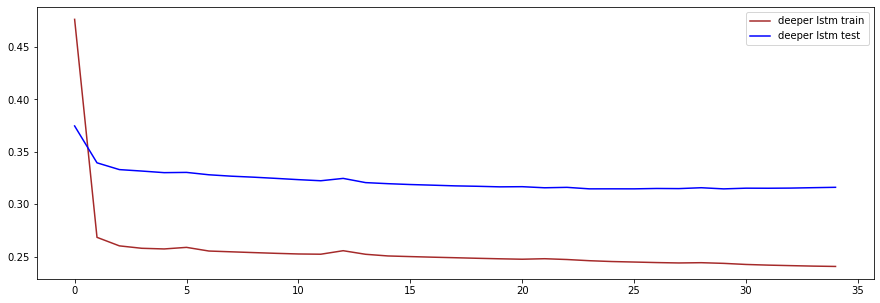
test_y.reshape(10462,1)
array([[-0.85614005],
[-0.85614005],
[-0.98007454],
...,
[-0.48433656],
[-0.60827106],
[-0.73220555]])
Persistent model numbers for comparison#
from sklearn.metrics import *
from math import sqrt
test_y_persist=test_y[:-6]
pred_y_persist=test_y[6:]
MSE = mean_squared_error(test_y_persist, pred_y_persist)
R2 = r2_score(test_y_persist, pred_y_persist)
RMSE = sqrt(mean_squared_error(test_y_persist, pred_y_persist))
MAE = mean_absolute_error(test_y_persist, pred_y_persist)
print(f'persistent model MSE {MSE}')
print(f'persistent model R2 {R2}')
print(f'persistent model RMSE {RMSE}')
print(f'persistent model MAE {MAE}')
persistent model MSE 1.2009962513334058
persistent model R2 -0.04129338603384225
persistent model RMSE 1.095899745110567
persistent model MAE 0.8083478100644846
graphs#
import matplotlib.pyplot as plt
plt.rcParams['figure.figsize'] = (15,5)
from sklearn.metrics import *
from math import sqrt
MSE = mean_squared_error(test_y, pred_y)
R2 = r2_score(test_y, pred_y)
RMSE = sqrt(mean_squared_error(test_y, pred_y))
MAE = mean_absolute_error(test_y, pred_y)
print(f'LSTM model MSE {MSE}')
print(f'LSTM model R2 {R2}')
print(f'LSTM model RMSE {RMSE}')
print(f'LSTM model MAE {MAE}')
#plotting predicted test value vs actual test value
plt.plot(test_y, label = 'Actual')
plt.plot(pred_y, label = 'Predicted')
plt.legend()
plt.show()
0.3130493153248531
0.7284562728995325
0.5595081012146769
0.4033790680091858
#over small part of data
plt.plot(test_y[0:200], label = 'Actual')
plt.plot(pred_y[0:200], label = 'Predicted')
plt.legend()
plt.show()
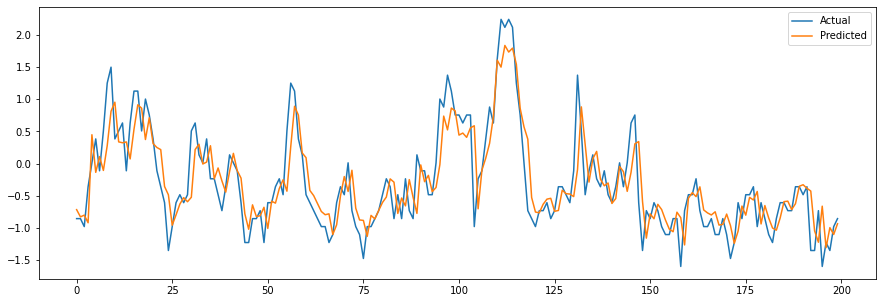
#Un-normalizing the data
test_y_unnorm = test_y * hourly['wnd_speed'].std() + hourly['wnd_speed'].mean()
pred_y_unnorm = pred_y * hourly['wnd_speed'].std() + hourly['wnd_speed'].mean()
plt.plot(test_y_unnorm[0:200], label = 'Actual')
plt.plot(pred_y_unnorm[0:200], label = 'Predicted')
plt.axhline(y = 7, label = 'Start-Up Speed',color='y')
plt.axhline(y = 11, label = 'Cut-In Speed',color='g')
plt.axhline(y = 15, label = 'Furling Speed',color = 'r')
plt.legend()
plt.show()
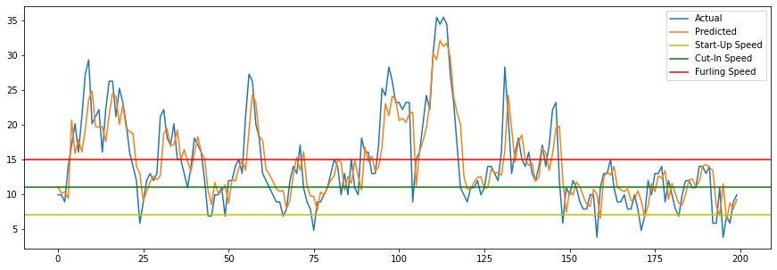
Deploying model#
model_version = "0001"
model_name = "wind_speed_predictor"
model_path = os.path.join(model_name, model_version)
tf.saved_model.save(model, model_path)
WARNING:absl:Found untraced functions such as lstm_cell_layer_call_fn, lstm_cell_layer_call_and_return_conditional_losses, lstm_cell_1_layer_call_fn, lstm_cell_1_layer_call_and_return_conditional_losses, lstm_cell_2_layer_call_fn while saving (showing 5 of 15). These functions will not be directly callable after loading.
WARNING:absl:Found untraced functions such as lstm_cell_layer_call_fn, lstm_cell_layer_call_and_return_conditional_losses, lstm_cell_1_layer_call_fn, lstm_cell_1_layer_call_and_return_conditional_losses, lstm_cell_2_layer_call_fn while saving (showing 5 of 15). These functions will not be directly callable after loading.
INFO:tensorflow:Assets written to: wind_speed_predictor\0001\assets
INFO:tensorflow:Assets written to: wind_speed_predictor\0001\assets
project_id = "nimble-yen-312518"
import googleapiclient.discovery
os.environ["GOOGLE_APPLICATION_CREDENTIALS"] = "nimble-yen-312518-3eb8917d0b33.json"
model_id = "wind_speed_predictor"
model_path = "projects/{}/models/{}".format(project_id, model_id)
model_path += "/versions/wind_speed_v0001/" # if you want to run a specific version
ml_resource = googleapiclient.discovery.build("ml", "v1").projects()
---------------------------------------------------------------------------
ModuleNotFoundError Traceback (most recent call last)
<ipython-input-25-3868be812712> in <module>
----> 1 import googleapiclient.discovery
2
3 os.environ["GOOGLE_APPLICATION_CREDENTIALS"] = "nimble-yen-312518-3eb8917d0b33.json"
4 model_id = "wind_speed_predictor"
5 model_path = "projects/{}/models/{}".format(project_id, model_id)
ModuleNotFoundError: No module named 'googleapiclient'
def predict(X):
input_data_json = {"signature_name": "serving_default",
"instances": X.tolist()}
request = ml_resource.predict(name=model_path, body=input_data_json)
response = request.execute()
if "error" in response:
raise RuntimeError(response["error"])
return np.array([pred['dense'] for pred in response["predictions"]])
Y_probas = predict(test_X[0:100])
np.round(Y_probas, 2)
---------------------------------------------------------------------------
NameError Traceback (most recent call last)
<ipython-input-26-f9aeeae770d5> in <module>
----> 1 Y_probas = predict(test_X[0:100])
2 np.round(Y_probas, 2)
NameError: name 'predict' is not defined
Multi Hour Prediction Model#
dataset = features.values
scaler = StandardScaler().fit(dataset[:train_split])
dataset = scaler.transform(dataset)
def multivariate_data(dataset, target, start_index, end_index, history_size,
target_size, step, single_step=False):
data = []
labels = []
start_index = start_index + history_size
if end_index is None:
end_index = len(dataset) - target_size
for i in range(start_index, end_index):
indices = range(i-history_size, i, step)
data.append(dataset[indices])
if single_step:
labels.append(target[i+target_size])
else:
labels.append(target[i:i+target_size])
return np.array(data), np.array(labels)
past_history = 100
future_target = 6
STEP = 1
x_train_multi, y_train_multi = multivariate_data(dataset, dataset[:, 1], 0,
train_split, past_history,
future_target, STEP)
x_val_multi, y_val_multi = multivariate_data(dataset, dataset[:, 1],
train_split, None, past_history,
future_target, STEP)
BATCH_SIZE = 256
BUFFER_SIZE = 10000
train_data_multi = tf.data.Dataset.from_tensor_slices((x_train_multi, y_train_multi))
train_data_multi = train_data_multi.cache().shuffle(BUFFER_SIZE).batch(BATCH_SIZE)
val_data_multi = tf.data.Dataset.from_tensor_slices((x_val_multi, y_val_multi))
val_data_multi = val_data_multi.batch(BATCH_SIZE)
modelMulti = tf.keras.models.Sequential([
tf.keras.layers.LSTM(32, return_sequences=True,
input_shape=x_train_multi.shape[-2:]),
tf.keras.layers.LSTM(16, dropout=0.2),
tf.keras.layers.Dense(6),
])
modelMulti.compile(
optimizer=tf.keras.optimizers.Adam(), loss='mse')
earlyMulti = tf.keras.callbacks.EarlyStopping('val_loss', patience=3)
historyMulti = modelMulti.fit(train_data_multi, epochs=100,
validation_data=val_data_multi,
callbacks=[earlyMulti])
Epoch 1/100
98/98 [==============================] - 28s 249ms/step - loss: 0.9807 - val_loss: 0.0254
Epoch 2/100
98/98 [==============================] - 24s 246ms/step - loss: 0.8156 - val_loss: 0.0223
Epoch 3/100
98/98 [==============================] - 24s 244ms/step - loss: 0.9133 - val_loss: 0.0158
Epoch 4/100
98/98 [==============================] - 24s 242ms/step - loss: 0.7308 - val_loss: 0.0150
Epoch 5/100
98/98 [==============================] - 24s 245ms/step - loss: 0.9891 - val_loss: 0.0135
Epoch 6/100
98/98 [==============================] - 24s 240ms/step - loss: 0.6423 - val_loss: 0.0149
Epoch 7/100
98/98 [==============================] - 24s 244ms/step - loss: 0.6819 - val_loss: 0.0119
Epoch 8/100
98/98 [==============================] - 25s 252ms/step - loss: 0.7665 - val_loss: 0.0131
Epoch 9/100
98/98 [==============================] - 25s 252ms/step - loss: 0.5550 - val_loss: 0.0113
Epoch 10/100
98/98 [==============================] - 25s 256ms/step - loss: 0.6773 - val_loss: 0.0113
Epoch 11/100
98/98 [==============================] - 24s 243ms/step - loss: 0.5804 - val_loss: 0.0108
Epoch 12/100
98/98 [==============================] - 23s 232ms/step - loss: 0.6868 - val_loss: 0.0101
Epoch 13/100
98/98 [==============================] - 23s 234ms/step - loss: 0.6001 - val_loss: 0.0105
Epoch 14/100
98/98 [==============================] - 23s 240ms/step - loss: 0.4442 - val_loss: 0.0103
Epoch 15/100
98/98 [==============================] - 24s 244ms/step - loss: 0.6060 - val_loss: 0.0098
Epoch 16/100
98/98 [==============================] - 24s 245ms/step - loss: 0.6603 - val_loss: 0.0094
Epoch 17/100
98/98 [==============================] - 23s 236ms/step - loss: 0.7263 - val_loss: 0.0094
Epoch 18/100
98/98 [==============================] - 23s 232ms/step - loss: 0.4878 - val_loss: 0.0092
Epoch 19/100
98/98 [==============================] - 23s 236ms/step - loss: 0.4850 - val_loss: 0.0090
Epoch 20/100
98/98 [==============================] - 24s 241ms/step - loss: 0.5690 - val_loss: 0.0091
Epoch 21/100
98/98 [==============================] - 24s 246ms/step - loss: 0.7343 - val_loss: 0.0095
Epoch 22/100
98/98 [==============================] - 23s 236ms/step - loss: 0.5315 - val_loss: 0.0089
Epoch 23/100
98/98 [==============================] - 25s 250ms/step - loss: 0.5730 - val_loss: 0.0089
Epoch 24/100
98/98 [==============================] - 24s 241ms/step - loss: 0.4453 - val_loss: 0.0136
Epoch 25/100
98/98 [==============================] - 23s 238ms/step - loss: 0.6348 - val_loss: 0.0096
Epoch 26/100
98/98 [==============================] - 23s 237ms/step - loss: 0.4740 - val_loss: 0.0091- loss: 0.4
history_df = pd.DataFrame(historyMulti.history)
history_df['epoch'] = historyMulti.epoch
fig = plt.Figure(figsize=(15, 8))
epochs_to_mean = 1
plt.plot(history_df['loss'].rolling(epochs_to_mean).mean(), 'b')
plt.plot(history_df['val_loss'].rolling(epochs_to_mean).mean(), '-r')
plt.suptitle('Learning Curves')
plt.legend(['Training Loss', 'Validation Loss'])
plt.xlabel("Epoch")
plt.ylabel("Loss")
plt.show()
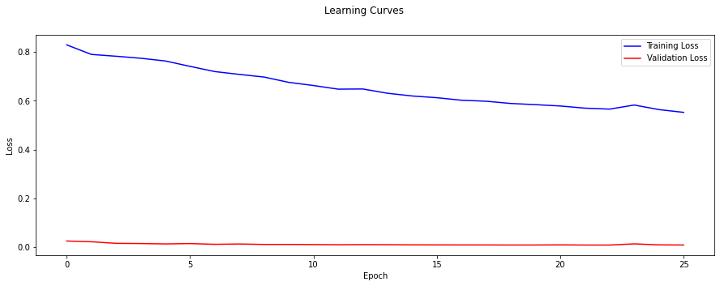
graphs#
def create_time_steps(length):
return list(range(-length, 0))
def multi_step_plot(history, true_future, prediction):
plt.figure(figsize=(12, 6))
num_in = create_time_steps(len(history))
num_out = len(true_future)
plt.plot(num_in, np.array(history[:, 1]), label='History')
plt.plot(np.arange(num_out)/STEP, np.array(true_future), 'bo',
label='True Future')
if prediction.any():
plt.plot(np.arange(num_out)/STEP, np.array(prediction), 'ro',
label='Predicted Future')
plt.legend(loc='upper left')
plt.show()
for x, y in val_data_multi.take(7):
multi_step_plot(x[0], y[0], modelMulti.predict(x)[0])
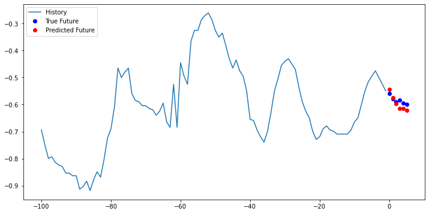
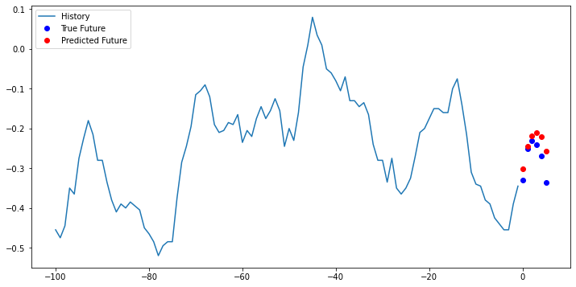
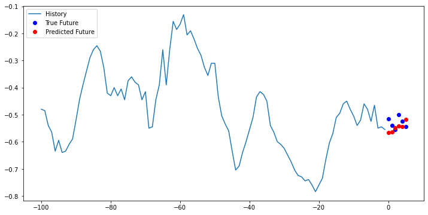
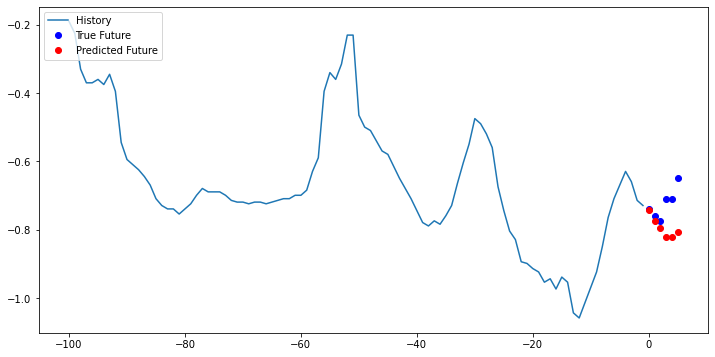
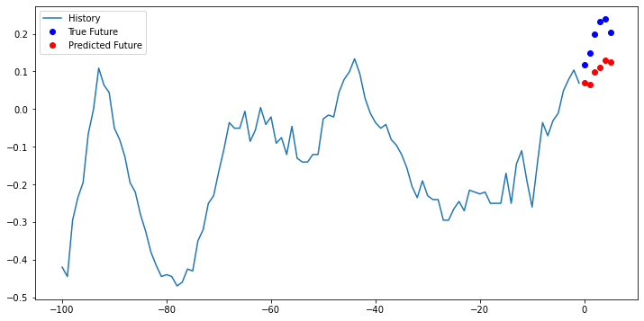
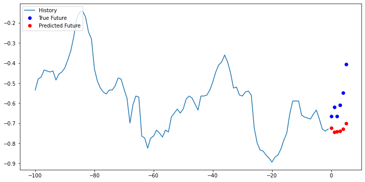
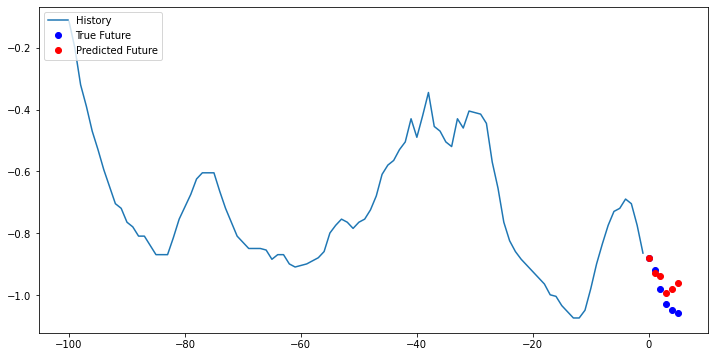
predictions=modelMulti.predict(val_data_multi)
predictions.shape
(9834, 6)
length=len(list(val_data_multi.unbatch().as_numpy_iterator()))
yvalues=list(val_data_multi.unbatch().as_numpy_iterator())[:][:][1]
y_values=[]
for x in list(val_data_multi.unbatch().as_numpy_iterator()):
y_values.append(x[1])
np.transpose(y_values)
(6, 9834)
predictions.T.shape
(6, 9834)
Metrics#
import matplotlib.pyplot as plt
plt.rcParams['figure.figsize'] = (15,5)
from sklearn.metrics import *
from math import sqrt
for t in range(6):
temp_y=np.transpose(y_values)[t]
temp_p=predictions.T[t]
MSE = mean_squared_error(temp_y, temp_p)
R2 = r2_score(temp_y, temp_p)
RMSE = sqrt(mean_squared_error(temp_y, temp_p))
MAE = mean_absolute_error(temp_y, temp_p)
print(f' the MSE for {t+1} hours in the future is {MSE}')
#print(R2)
#print(RMSE)
#print(MAE)
the MSE for 1 hours in the future is 0.004097785755825957
the MSE for 2 hours in the future is 0.005444622975399891
the MSE for 3 hours in the future is 0.00772506228887881
the MSE for 4 hours in the future is 0.010040809607147856
the MSE for 5 hours in the future is 0.012213256321181672
the MSE for 6 hours in the future is 0.014785846071394534
Persistent metrics#
persistent_pred=np.transpose(y_values)[0][:-6]
import matplotlib.pyplot as plt
plt.rcParams['figure.figsize'] = (15,5)
from sklearn.metrics import *
from math import sqrt
for t in range(6):
temp_y=np.transpose(y_values)[t][1:-5]
temp_p=persistent_pred
MSE = mean_squared_error(temp_y, temp_p)
R2 = r2_score(temp_y, temp_p)
RMSE = sqrt(mean_squared_error(temp_y, temp_p))
MAE = mean_absolute_error(temp_y, temp_p)
print(f' the MSE for {t+1} hours in the future is {MSE}')
#print(R2)
#print(RMSE)
#print(MAE)
the MSE for 1 hours in the future is 0.0024584141232643166
the MSE for 2 hours in the future is 0.006664944826169482
the MSE for 3 hours in the future is 0.012307676518054554
the MSE for 4 hours in the future is 0.01885990305641931
the MSE for 5 hours in the future is 0.025801345895715335
the MSE for 6 hours in the future is 0.03271950008353599